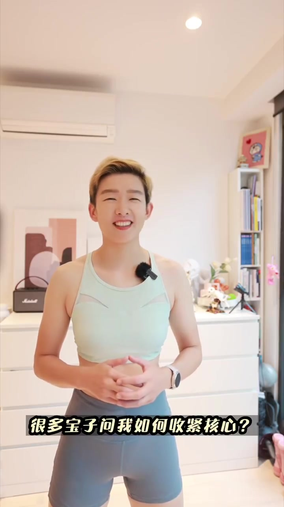
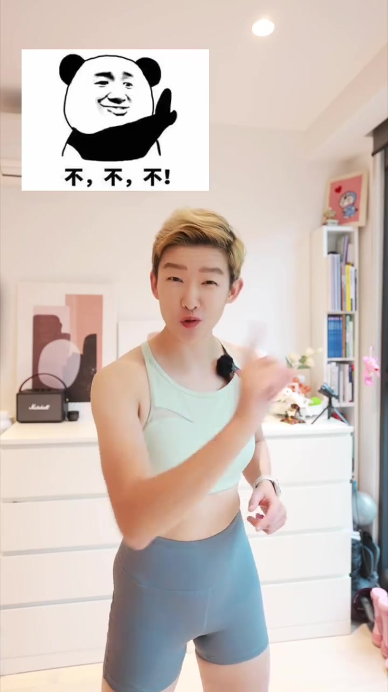
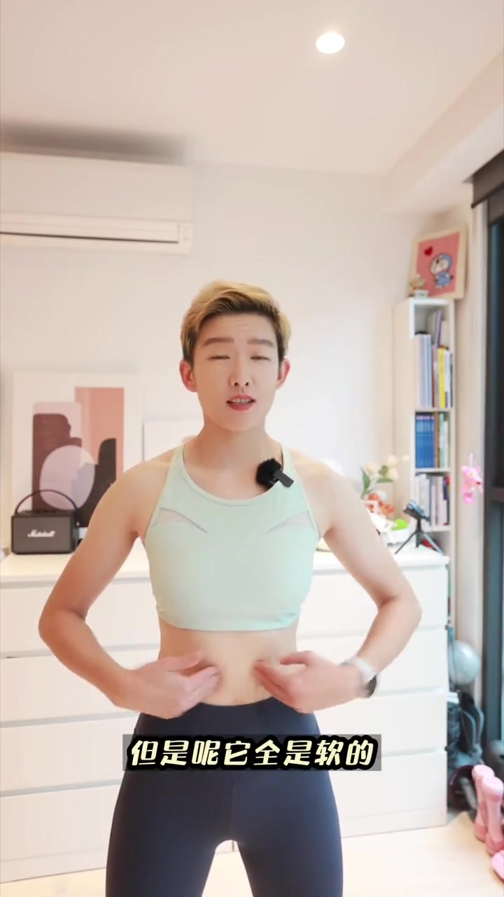
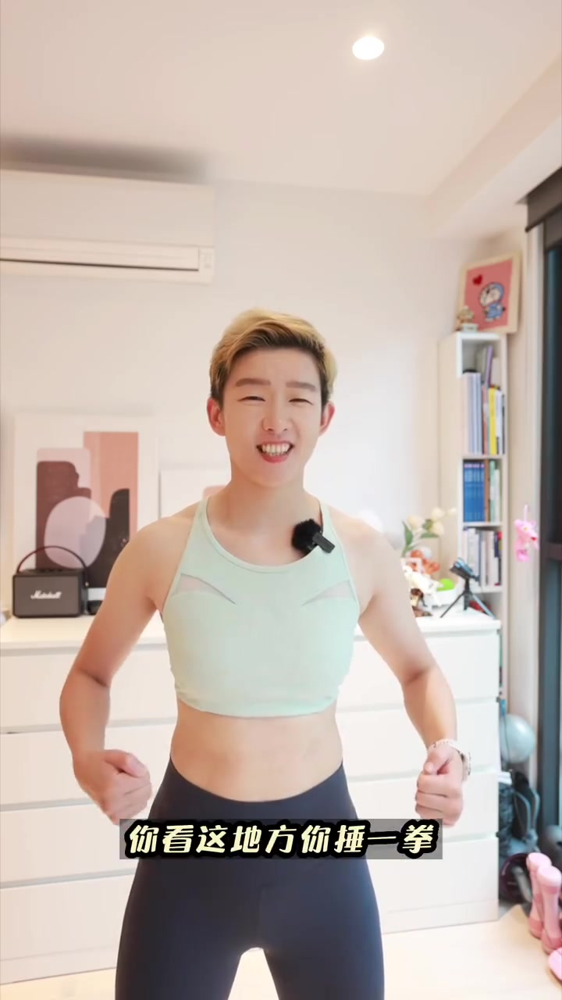
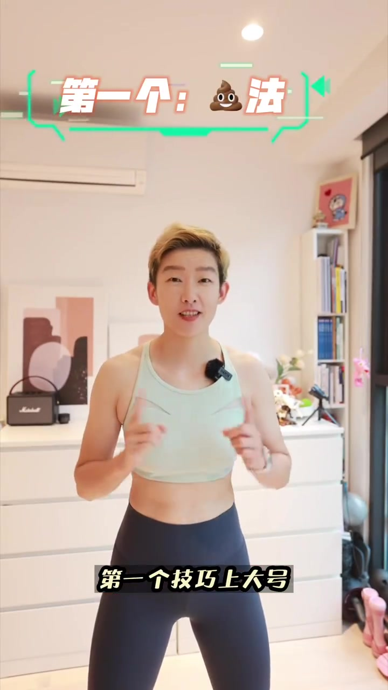
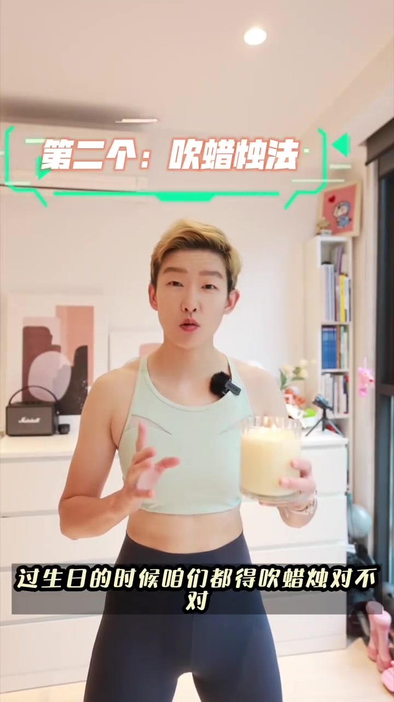

01
中文
核心肌群不只是肚子。
EN
The core is more than your belly.
表达提示core（核心）

Scene English · 运动 · 核心训练
Brace Your Core, Don't Suck In—3 Methods
🎧 语音讲解
What the Core Includes
情境先明确什么是核心肌群。很多宝子以为肚子就是一个核心，不对，它只是核心的一部分。核心肌群包括腹部、背部以及骨盆。这些核心肌群收紧之后就会如铜墙铁壁般，在运动的时候防止受伤，并且保持好的体型体态。
核心肌群不只是肚子。
The core is more than your belly.
表达提示core（核心）
它包括腹部、背部以及骨盆。
It includes the abs, back and pelvis.
表达提示pelvis（骨盆）
收紧后如铜墙铁壁，防止受伤。
Bracing turns it into an iron wall against injury.
表达提示brace（收紧）
core（核心
pelvis（骨盆

Bracing vs Sucking In
情境要搞清楚核心收紧和吸肚子的区别。吸肚子是吸气，肚子瘪下去，但是全是软的；而核心收紧是像被击打一样一锤一圈，是可以抵挡住的。这就是为什么运动的时候要收紧核心。
吸肚子是吸气，肚子瘪下去但全软。
Sucking in deflates the belly but stays soft.
表达提示suck in（吸肚子）
核心收紧像一锤一圈，能抵挡住。
Bracing can take a punch—it holds.
表达提示take a punch（扛住一拳）
这就是运动时收紧核心的原因。
That's why you brace during exercise.
表达提示brace（绷紧）
suck in（吸肚子
take a punch（扛住一拳

Protecting the Spine
情境这些肌群一起发力的状态，可以保护我们的脊柱、腰椎以及其他各个关节，避免运动受伤。核心是身体的力量传导中枢。
肌群一起发力，保护脊柱和腰椎。
Firing together, they shield the spine and lower back.
表达提示shield（保护）
避免各个关节运动受伤。
They prevent joint injuries during sport.
表达提示joint（关节）
shield（保护
joint（关节

Trick 1: The Bathroom Grunt
情境第一个技巧：上大号。已经在拉屎有点干，出来往外站住。你看，收紧了。这个生活场景天然会让你启动腹部深层肌群。
上大号时会自然收紧核心。
Straining on the toilet naturally braces your core.
表达提示strain（用力）
你看，这就是收紧了。
See? That's a braced core.
表达提示braced（收紧的）
strain（用力
braced（收紧的

Trick 2: Blow Out the Candle
情境第二个技巧：过生日的时候咱们都得吹蜡烛。感受一下，又收紧了。吹蜡烛的呼气方式会启动腹横肌，让腰腹一圈都收紧。
过生日吹蜡烛，感受一下。
Birthday candles—feel it.
表达提示candle（蜡烛）
吹蜡烛的呼气，自然收紧腰腹。
Blowing engages the transverse abs and tightens the waist.
表达提示transverse abs（腹横肌）
candle（蜡烛
transverse abs（腹横肌

Trick 3: Laugh Your Abs Out
情境第三招：笑出腹肌。哈哈哈，感受一下，特别紧。这个招真有用，笑出腹肌那是真的。大声笑的腹压与核心收紧的腹压机制一致。
大笑时，肚子特别紧。
Laughing hard makes the belly feel tight.
表达提示tight（紧）
笑出腹肌是真的，这招真有用。
Laughing your abs out is real—it works.
表达提示work（有效）
大声笑的腹压，和核心收紧机制一致。
Laughing builds the same intra-abdominal pressure.
表达提示intra-abdominal pressure（腹压）
tight（紧
work（有效
说核心肌群组成
说收紧与吸肚子的区别
说保护脊柱
说吹蜡烛技巧
吸肚子是软的，扛不住冲击
只练肚子不是核心训练
憋气收紧会缺氧眩晕
发力瞬间才收核心容易受伤